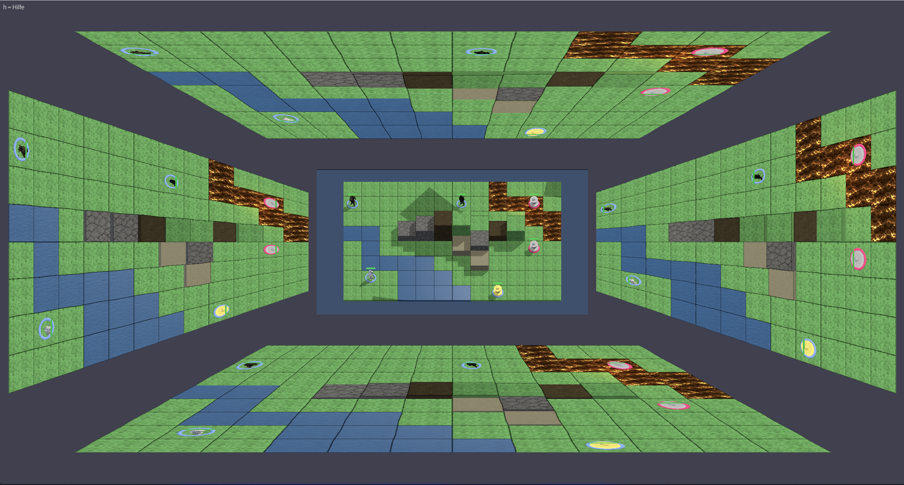
Tabletop-Modus
Fünf Perspektiven gleichzeitig: Der DM sieht alles von oben, vier Spieler-Views zeigen das Schlachtfeld aus ihrer Richtung. Perfekt für den großen Bildschirm am Tisch.

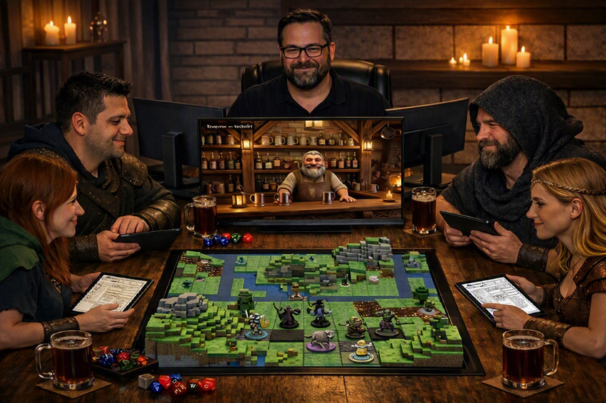
3D-Schlachtfelder, Kampagnen-Planung, lebendige Städte — ein System, das mit deiner Geschichte wächst.
Taktische Tiefe trifft auf visuelle Klarheit — vom 3D-Schlachtfeld bis zum Fog of War.

Fünf Perspektiven gleichzeitig: Der DM sieht alles von oben, vier Spieler-Views zeigen das Schlachtfeld aus ihrer Richtung. Perfekt für den großen Bildschirm am Tisch.
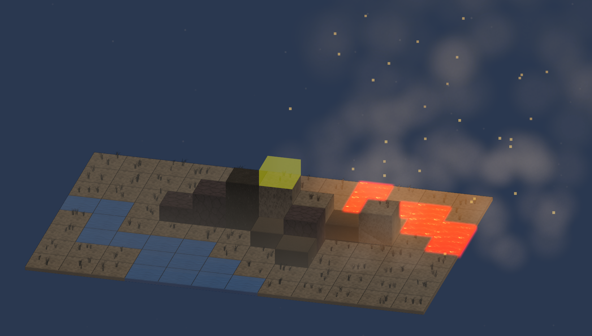
Voxel-basiertes 3D-Schlachtfeld mit Elevation, 13 Biomen und dynamischem Wetter. Lava glüht, Wasser fließt, Vulkanasche regnet vom Himmel — jeder Kampf hat seine eigene Atmosphäre.
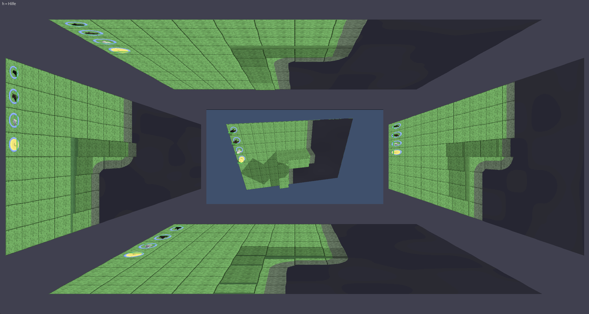
Echte Sichtlinien mit Elevation-Blockierung. Unerforschte Bereiche bleiben schwarz, bereits gesehene Tiles sind abgedunkelt. Die Party teilt ihr Sichtfeld — Gegner erscheinen erst, wenn sie gesehen werden.

Movement und Danger Zones machen Positionen sofort lesbar. Reichweiten, Wege und Risiken sind direkt sichtbar — taktische Entscheidungen ohne langes Diskutieren.
Von der Weltkarte bis zur Taverne — plane Kampagnen, erkunde Städte, erlebe Geschichten.
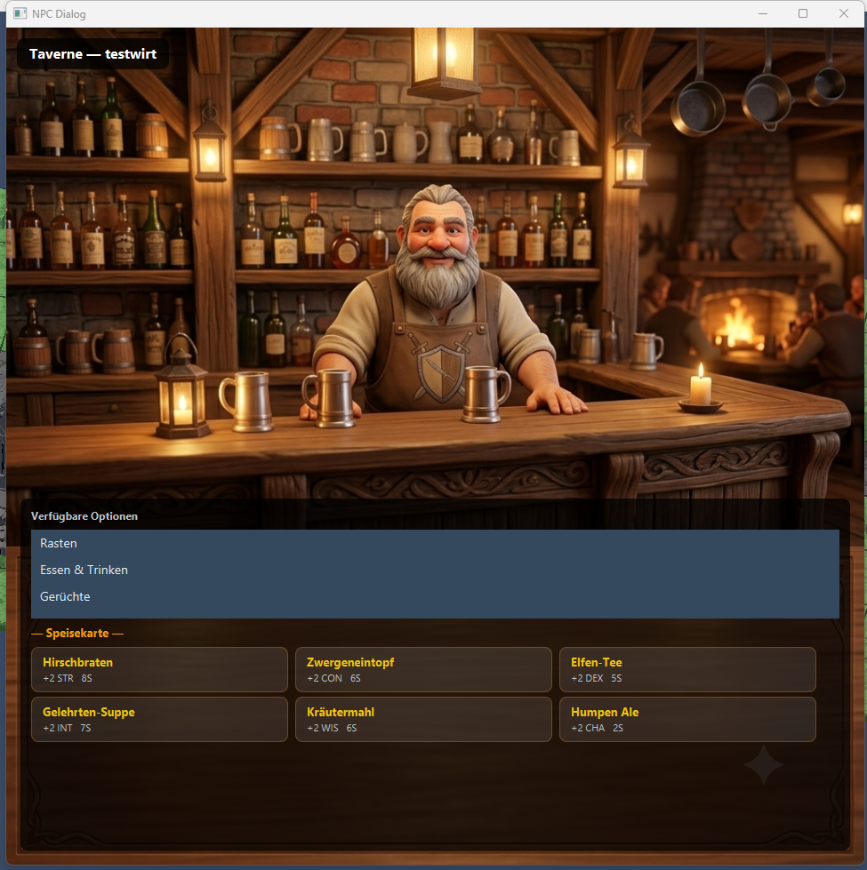
Interagiere mit NPCs in Tavernen, Tempeln, Shops und der Abenteurergilde. Höre Gerüchte, heile im Tempel, heuere Mitstreiter an — oder nimm Quests von Quest-Givern an.
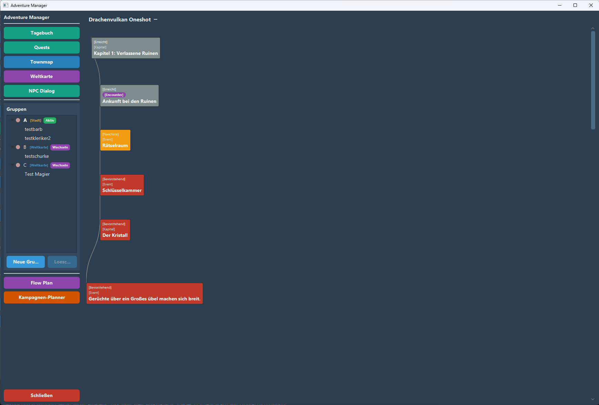
Visueller Storyline-Graph mit Kapiteln, Encounters und Events. Plane deine Kampagne als Flow-Diagramm, verknüpfe Begegnungen und behalte den roten Faden im Blick.
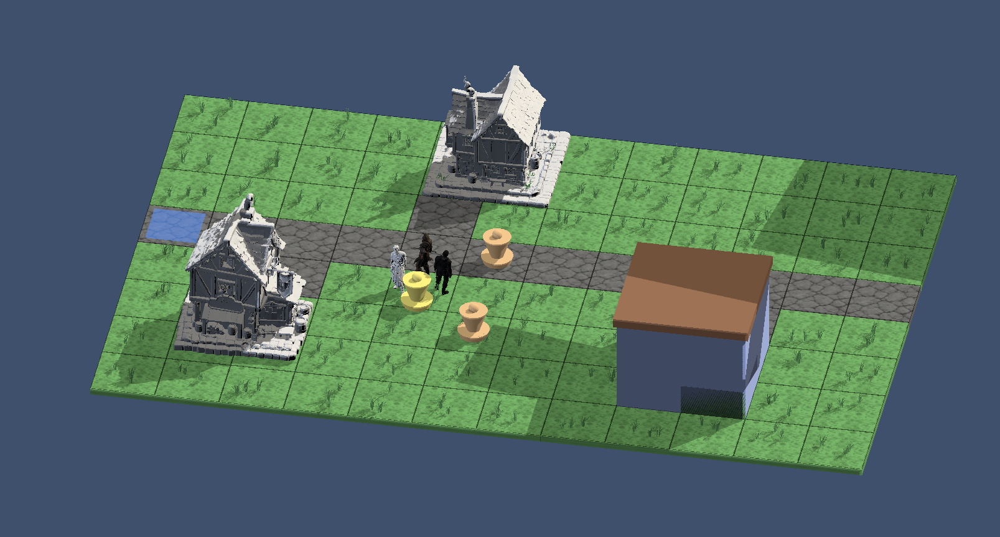
Städte in 3D erkunden. Gebäude, Straßen und Plätze — deine Gruppe bewegt sich durch die Stadt wie auf einem Tabletop. Betritt Gebäude und interagiere mit NPCs.
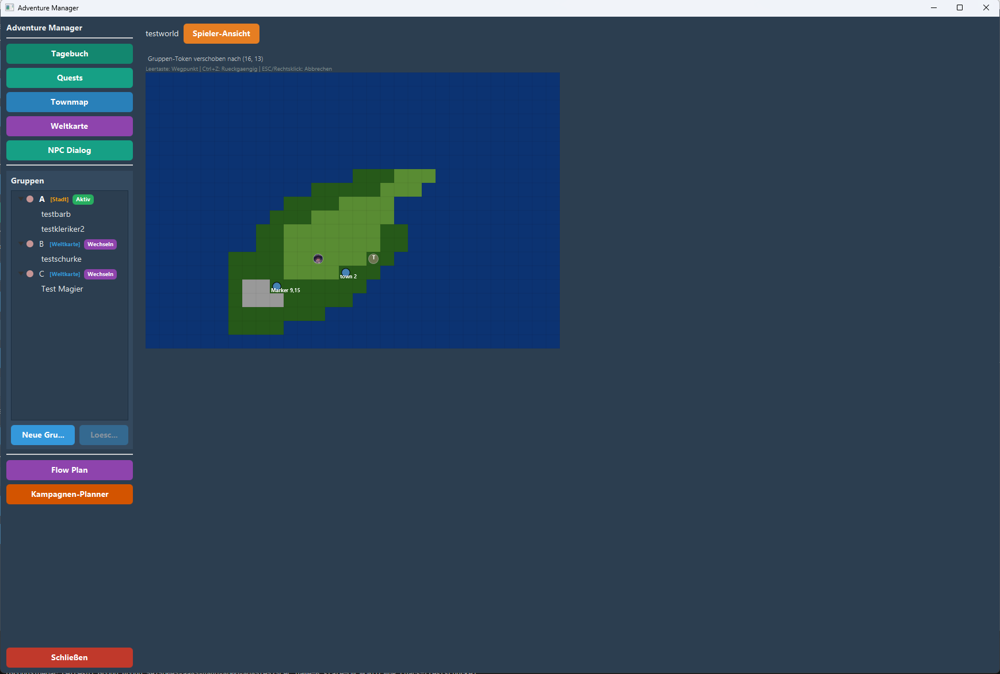
Verwalte mehrere Gruppen gleichzeitig auf der Weltkarte. Bewege sie über Kontinente, splitte die Party, führe sie wieder zusammen — alles im Adventure Manager.
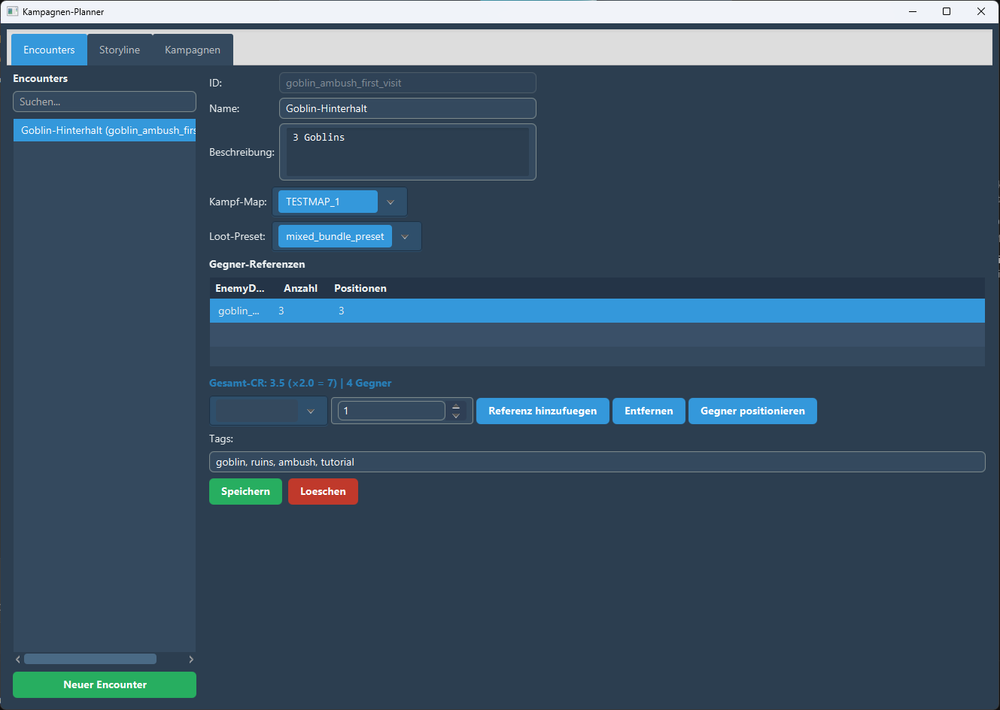
Definiere Begegnungen mit Gegnern, Map und Loot. Live-CR-Berechnung nach D&D 5e zeigt sofort die Schwierigkeit. Positioniere Gegner visuell auf der Karte.
Das Fundament: Dashboard, Creator-Tools, Inventar und flexible Session-Modi.

Initiative, Zustände, HP und Kerninfos an einem Ort. Das Dashboard hält den Überblick, damit du dich auf die Geschichte konzentrieren kannst.

Abilities, Items, Gegner, Feats — alles modular erstellbar. Aktiviere genau die Werkzeuge, die zu deinem Stil und deiner Kampagne passen.
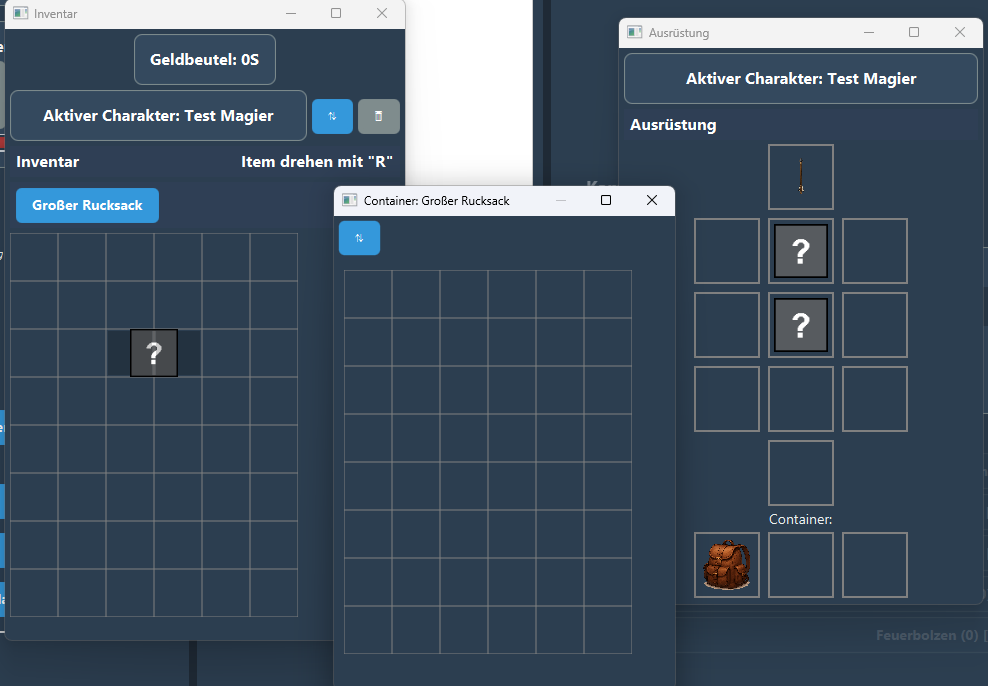
Drag-and-Drop Inventar mit visuellem Grid-Layout. Waffen, Rüstungen, Tränke — alles an seinem Platz. Container für extra Stauraum, Ausrüstungs-Slots für schnellen Zugriff.
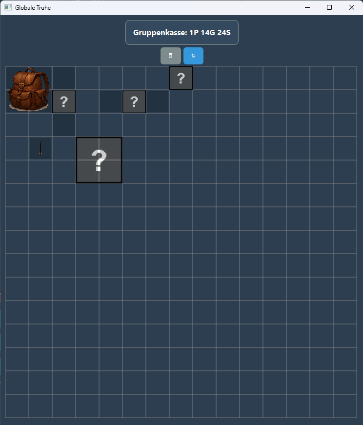
Dein Lager für Quest-Gegenstände und besondere Belohnungen. Bereite Items vor und schiebe sie Spielern direkt ins Inventar — ohne Umwege, ohne Suchen.
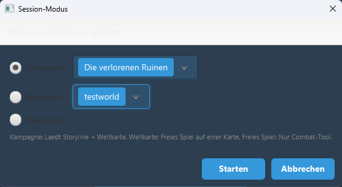
Starte wie du willst: Kampagne lädt Storyline und Weltkarte, Weltkarte für freies Sandbox-Spiel, Freies Spiel für schnelle Combat-Sessions.
Dice & Screen wird in klaren Schritten weiterentwickelt. Der Fokus bleibt auf einem stabilen, DM-first Werkzeug.